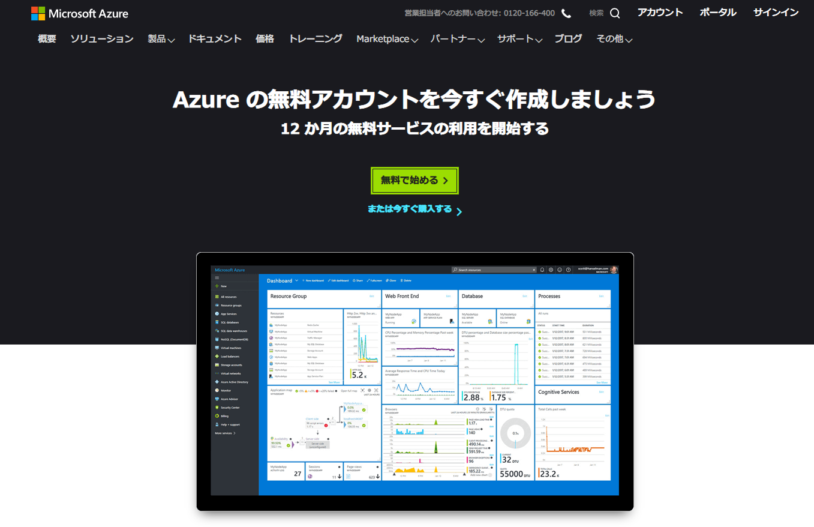
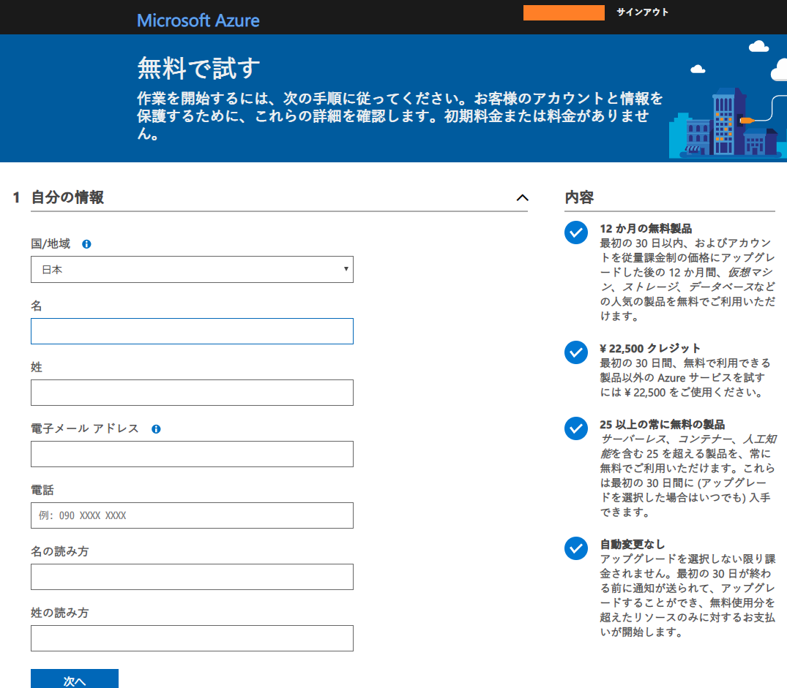
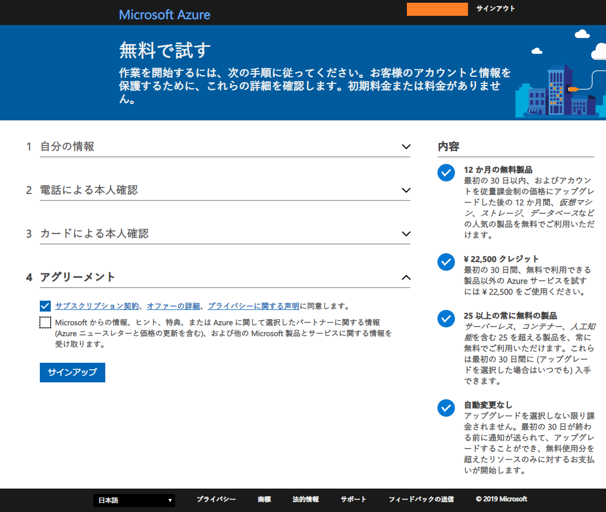
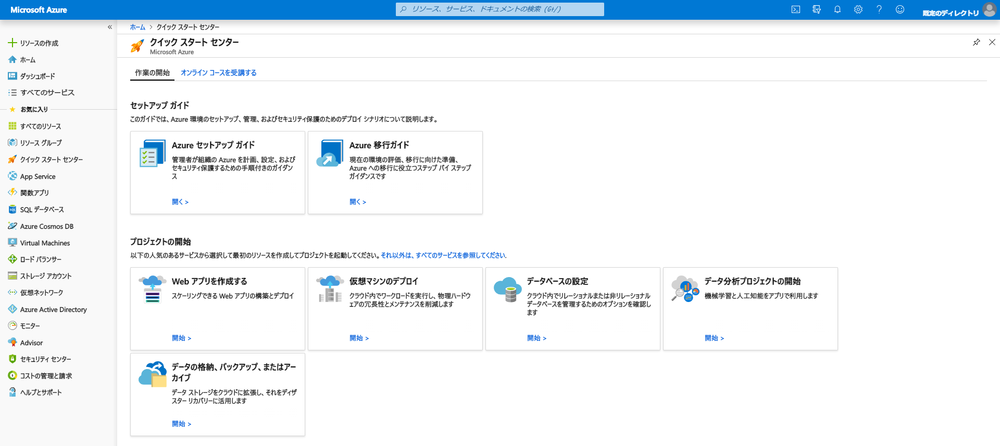

Microsoft Azure に登録してみた
GCP (Google Cloud Platform)、AWS (Amazon Web Services)、OCI (Oracle Cloud Infrastructure) に引き続き、Microsoft Azure に登録してみる。

↑ 無料で始める。

↑ Microsoft アカウントを持っていればログインして、それと紐付けて Azure アカウントが作れる。

↑ 氏名・住所を入力。続いて SMS (電話番号) による認証と、クレジットカード情報を登録する。

↑ 全部登録できたら進む。

↑ このようなダッシュボードが表示されたら登録完了。
Azure は、課金体系を「サブスクリプション」という形で表現していて、登録直後は「無料試用版」という無料枠での利用となる。勝手に課金が始まることはないようで、無料試用版から課金型に切り替えて始めて課金が始まる形になる。
Azure は画面のとっつきやすさが特徴的で、Azure DevOps など便利そうなサービスもあるが、料金は少々強めの設定か。Windows OS のサーバを使うとか Office との連携を考えているとかでないと、あまり旨味を感じにくいかもしれない。
ただ、Oracle Cloud とは専用回線で相互接続できるので、「Windows サーバは Azure に、Oracle DB は OCI に」という形でリフト & シフトして、両社のいいとこ取りをするのはアリかもしれない。